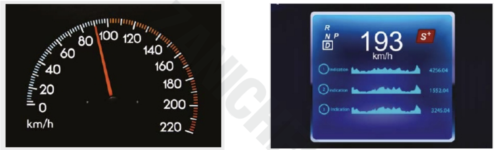

Rappresentazione delle Informazioni
In questo capitolo scopriremo come il computer riesce a capire testo, immagini, suoni e video usando solo 0 e 1. Sembra magia, ma è solo matematica!
Analogico vs Digitale (o: il mondo reale contro Matrix)
Avete presente il tachimetro dell'auto? Quello con la lancetta che si muove fluidamente è analogico, quello con i numeri che saltano è digitale.
Analogico = dati che variano in modo continuo. In ogni istante abbiamo un'informazione, senza "buchi". La lancetta del tachimetro si muove in modo fluido da 0 a 180 km/h, passando per TUTTI i valori intermedi. Tipo il tempo: scorre continuamente, senza salti.
Digitale = dati che variano in modo discreto (cioè a "scatti"). Vengono scelti solo alcuni momenti specifici (campioni) e tutto diventa un numero. Tipo un orologio digitale che mostra 10:15:00, poi 10:15:01, poi 10:15:02... salta da un secondo all'altro senza mostrare i millisecondi nel mezzo.
Analogico: rappresenta un fenomeno con continuità (fluido, senza interruzioni) Digitale: rappresenta lo stesso fenomeno traducendolo in cifre (dall'inglese digit = cifra), quindi in modo discontinuo.

Ma perché dobbiamo convertire tutto in digitale?
Perché il computer capisce solo numeri. Non sa cosa sono le foto, i video, la musica... sa solo fare calcoli con i numeri. Tutto quello che vedete, ascoltate o leggete al PC è stato prima convertito in numeri!
E che tipo di numeri usa il PC?
Numeri in binario (cioè solo 0 e 1). Perché? Perché è il modo più semplice per costruire circuiti elettronici: corrente passa = 1, corrente non passa = 0. Easy!
Il sistema binario
Il sistema binario è un sistema numerico posizionale in base 2, che usa solo 2 cifre: 0 e 1. Tutto il resto si costruisce da lì.
Posizionale significa che la posizione della cifra ne determina il valore. Tipo nel sistema decimale (base 10) che usate tutti i giorni:
Nel numero 37, la cifra 3 vale di più della cifra 7, anche se è più piccola, perché occupa la posizione delle decine. La cifra 7 invece occupa la posizione delle unità.
Questo modo di ragionare deriva dal fatto che abbiamo 10 dita! Fin da bambini contavamo sulle dita arrivando a 10. Ecco perché usiamo la base 10.
Ma nella storia si sono usate anche altre basi! Ad esempio: - Le uova si vendono a dozzine (base 12) - I minuti e secondi vanno a gruppi di 60 (base 60, eredità dei Babilonesi) - Le ore sono 24 (base 24)
Quindi l'idea di usare altre basi non è poi così strana!
Nell'aritmetica decimale esistono 10 cifre diverse (da 0 a 9) e quando si deve indicare un numero più grande di 9, si comincia a raggruppare mettendo in evidenza “a gruppi di 10”. Ecco che
Allo stesso modo si continua con le centinaia, che sono formate da 10 decine e così via. Ad esempio:
582 = 500 + 80 + 2
= 5 centinaia + 8 decine + 2 unità
= 5 x 100 + 8 x 10 + 2x1
= 5 x 10 alla 2 + 8 x 10 alla 1 + 2 x 10 alla 0
Notiamo soprattutto l'ultima rappresentazione. In questo modo si può indicare ogni gruppo con un indice dato dalla potenza da assegnare alla base per ottenerne il peso. Infatti le unità sono il gruppo 0 (100 = 1), le decine sono il gruppo 1 (101 = 10), le centinaia il gruppo 2 (102 = 100) e così via praticamente all'infinito.
In base 2 (binario) abbiamo solo 0 e 1. Per rappresentare il numero 2 dobbiamo già iniziare a raggruppare! Tipo:
3 = 1 coppia + 1 unità = 11 (in binario)
5 = 1 doppia-coppia + 0 coppie + 1 unità = 101 (in binario)
Ecco i primi 10 numeri in decimale e binario (confrontateli!):
| Decimale | Binario |
|---|---|
| 0 | 0 |
| 1 | 1 |
| 2 | 10 |
| 3 | 11 |
| 4 | 100 |
| 5 | 101 |
| 6 | 110 |
| 7 | 111 |
| 8 | 1000 |
| 9 | 1001 |
Seguendo l'esempio precedente potremo stabilire una rappresentazione dei valori indicati in un numero binario:
1001 =
= 1 x 23 + 0 x 22 + 0 x 21 + 1 x 20 =
= 1 x 8 + 0 x 4 + 0 x 2 + 1 x 1 =
= 8 + 0 + 0 + 1 = 9
In questo modo dato un qualsiasi numero binario (una sequenza di zeri e uni), potremo stabilire quale quantità esso rappresenti in decimale semplicemente applicando la metodologia appresa.
Quale valore rappresenta il numero binario 101011?
101011 =
= 1 x 25 + 0 x 24 + 1 x 23 + 0 x 22 + 1 x 21 + 1 x 20 =
= 1 x 32 + 0 x 16 + 1 x 8 + 0 x 4 + 1 x 2 + 1 x 1 =
= 32 + 0 + 8 + 0 + 2 + 1 =
= 43
Al contrario se vogliamo capire qual è la rappresentazione binaria di un numero decimale dobbiamo utilizzare la tecnica delle divisioni (intere) successive.
Ad esempio, dato il numero 35, la sua rappresentazione binaria si ottiene dividendo (con resto) successivamente il numero fino ad ottenere quoziente zero; alla fine si prende la fila dei resti ottenendo una sequenza di zeri e uni che sono il numero binario.
35 / 2 = 17 con resto di 1
17 / 2 = 8 con resto di 1
8 / 2 = 4 con resto di 0
4 / 2 = 2 con resto di 0
2 / 2 = 1 con resto di 0
1 / 2 = 0 con resto di 1
da cui si desume che
Alcune definizioni
Bit : Ogni cifra di un numero binario
Byte (B) : Insieme di 8 bit
Nibble : Insieme di 4 bit -> 1 B = 8 bit = 2 nibble
Di seguito un tabella con le grandezze in byte:
| Unità di misura | Simbolo | Equivale a | Pari a circa | Può codificare |
|---|---|---|---|---|
| byte | B | 8 bit | un carattere alfanumerico | |
| kilobyte | kB | 1024 byte = 210 | 103 byte | un terzo di una pagina di testo |
| megabyte | kB | 1024 kilobyte = 220 | 106 byte | circa 300 pagine di testo |
| gigabyte | kB | 1024 megabyte = 230 | 109 byte | circa 300 mila pagine di testo |
| terabyte | kB | 1024 gigabyte = 240 | 1012 byte | circa 300 milioni di pagine di testo |
Esercizi
Esercizio 301
Convertire in binario i seguenti numeri decimali:
Esercizio 302
Convertire in decimale i seguenti numeri binari:
La Codifica Esadecimale
La codifica esadecimale è un sistema di numerazione in base 16, molto usato in informatica per rappresentare dati binari in modo più compatto e leggibile rispetto alla base 2 (binario).
Cos'è il Sistema Esadecimale?
Il sistema esadecimale utilizza 16 simboli: - Le cifre da 0 a 9, che hanno lo stesso valore come nel sistema decimale. - Le lettere dalla A alla F, che rappresentano i valori dal 10 al 15.
| Valore Decimale | Esadecimale |
|---|---|
| 0 | 0 |
| 1 | 1 |
| ... | ... |
| 10 | A |
| 11 | B |
| 12 | C |
| 13 | D |
| 14 | E |
| 15 | F |
Questa tabella mostra come i primi 16 numeri decimali si mappano in esadecimale.
Conversione da Decimale a Esadecimale
Per convertire un numero decimale in esadecimale, si divide il numero per 16, memorizzando il resto. Ad esempio, vediamo come convertire 156 in esadecimale:
- Divisione: 156 diviso 16 dà 9 come quoziente e 12 come resto.
- Corrispondenza del resto: Il resto 12 corrisponde a
Cin esadecimale. - Risultato: Partendo dall'alto, scriviamo il quoziente seguito dal resto, ottenendo 9C.
Quindi, 156 in decimale è uguale a 9C in esadecimale.
Conversione da Binario a Esadecimale
Il sistema esadecimale è particolarmente utile per rappresentare i numeri binari perché ogni cifra esadecimale rappresenta esattamente 4 bit (nibble).
| Binario | Esadecimale |
|---|---|
| 0000 | 0 |
| 0001 | 1 |
| 0010 | 2 |
| 0011 | 3 |
| 0100 | 4 |
| 0101 | 5 |
| 0110 | 6 |
| 0111 | 7 |
| 1000 | 8 |
| 1001 | 9 |
| 1010 | A |
| 1011 | B |
| 1100 | C |
| 1101 | D |
| 1110 | E |
| 1111 | F |
Esempio di Conversione Binaria
Prendiamo in esempio un numero binario: 11010110.
- Dividiamo il numero in gruppi di 4 bit:
1101e0110. - Convertiamo ogni gruppo:
1101diventaD0110diventa6
Il numero 11010110 in binario è D6 in esadecimale.
Vantaggi della Codifica Esadecimale
- Compattezza: Gli esadecimali permettono di scrivere numeri lunghi con meno cifre.
- Facilità di lettura: Per molti scopi, soprattutto in programmazione e configurazioni, è più facile leggere numeri in esadecimale che in binario.
- Rapporto diretto con il binario: La conversione tra esadecimale e binario è semplice, dato che ogni cifra esadecimale corrisponde a 4 bit.
Conclusione
La codifica esadecimale è fondamentale in informatica per rappresentare dati in modo compatto e leggibile, soprattutto quando si lavora con il sistema binario. Conoscere l'esadecimale è un'abilità essenziale per gli sviluppatori e gli operatori di sistema.
Mappa concettuale
graph LR
A[Codifica Esadecimale] --> B[Sistema di Numerazione]
B --> C[Base 16]
C --> D[0-9, A-F]
A --> E[Conversione Decimale]
E --> F[Decimale -> Esadecimale]
E --> G[Esadecimale -> Decimale]
A --> H[Vantaggi e Utilizzo]
H --> I[Identificatori di Colore]
H --> J[Indirizzi di Memoria]
Esercizi
- Converti i seguenti numeri decimali in esadecimale: 45, 128, 255.
- Converti i seguenti numeri esadecimali in decimale:
1A,7F,2B. - Usa la tabella di conversione per rappresentare il numero binario
10101010in esadecimale.